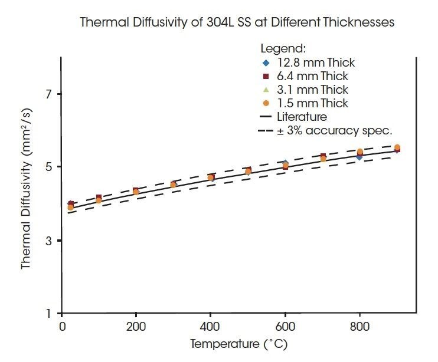

The Discovery Laser Flash DLF 1200 is a compact benchtop instrument for the measurement of thermal diffusivity, thermal conductivity, and specific heat capacity of materials from room temperature to 1200˚C. It features a proprietary laser source with 25 Joules of energy for testing of the widest range of samples under the most demanding conditions. Productivity is no problem with the four-sample tray design. It is the only benchtop light flash instrument available with a laser pulse source for enhanced precision, accuracy and capabilities beyond competitive Xenon light source designs.
The Benefits of a Powerful Laser for Data Accuracy
Accuracy defines how close a set of measured data are to the true value. It is typically assessed by repeatedly testing the same sample under the same conditions and comparing results to reference data. For a light flash instrument, the ability to make an accurate measurement relies on all design components working together efficiently as a system. These components include the light source, the pulse delivery, the detector, and the furnace. A laser light source provides a system advantage because of the power of the light pulse. As the thickness of a sample increases, laser power is important as more energy is required to transfer through the sample and detect a temperature rise on the opposite side.
To demonstrate the superior capabilities of the DLF 1200, four samples of a very well- characterized material, stainless steel 304L, ranging from approximately 1 to 10 mm in thickness were tested and compared to the literature values.
In the graph on the upper right, the thermal diffusivity results for the four samples are shown in comparison to the literature values for the stainless steel along with error bars of ±3% of the literature value. The accuracy is consistently better than the instrument specification of 3% for samples spanning an order of magnitude in thickness demonstrating the superior performance of the world’s most powerful benchtop light flash instrument.
